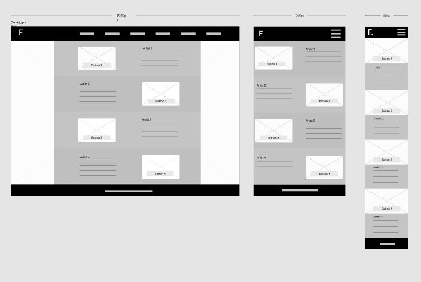

Finkglas Tattoo
-
This was a collaborative project undertaken during my front-end development training at Finglas Training Centre, Dublin 11. 'Finkglas' was a fictional tattoo studio located in (you guessed it!) Finglas village. The client wanted a website and rebrand of his business to reflect the area in which he lived. He wanted all this completed in two weeks.
-
The client wanted the studio name to convey his love for the Irish language. Finglas comes from the Irish Fionnghlas, which literally means 'clear stream'. On account of the client's apparent aquaphobia, we decided to go with an alternate rendering of 'glas' to green. We used that colour to emphasise the 'ink' in the Finkglas logo and as an accent colour on website.
-
The client expressed his desire to be involved in every step of the process. We kept him in the loop with our ideas for the site design creating many wireframes and worked closely with him to refine and lay everything out exactly how he wished.
- 
-
We used custom Javascript, HTML and CSS, and third-party jQuery plugins for mobile, tablet, and desktop versions of the website. The two pages I worked on exclusively were the Artists and Contact page, parts of which are shown below.